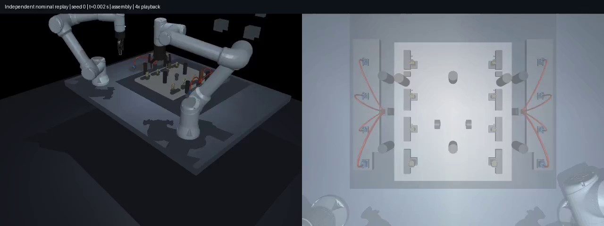

D1 / ORIGINAL O5评分器自检场景 · 非模型装配成绩 ↗D1 · 原创工业机器人任务 O5题目已构建 · 正式评测待启动
双臂装配，
还要完成选择性返修。
↗双 UR5e / 2F-85 完成八处汽车线束插接、实体布线与合盖，再解锁指定分支改道复插。横向 0.50 mm、轴向 0.30 mm，逐件验收。
Sol N/A 本轮尚无模型调用
服务器启动故障已记录；参考解留空，独立指标评分。完整可解性与实机迁移仍待验证。
查看题目、资产与评测状态 →